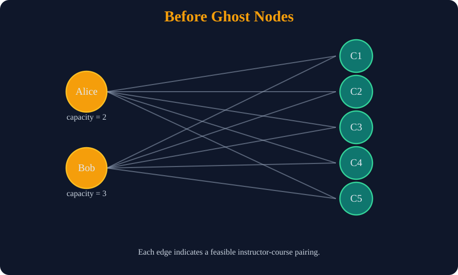
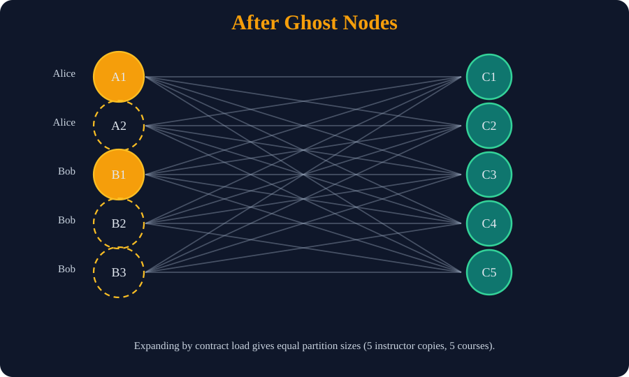

Designing AggieAssign's Scheduling Algorithm
An exercise in linear programming and my first onosecond
Background
In the first semester of my master's program, I elected to take CSCE 606, a software engineering course designed to fulfill one of the core requirements of my degree. I reasoned that this would be sufficiently different than the mathematics courses I was accustomed to and would be a good starting point for my postgraduate education. Unlike most other courses, CSCE 606 operates off of a top-heavy grading scale. The usual homeworks, programming assignments, and exams are by and large replaced by a single course project. This project spanned the course of the entire semester and was responsible for over half of the final grade.
Interestingly, this assignment was not some contrived project created for the sole purpose of testing students. Rather, the professor solicited requests from outside businesses and organizations who needed web development work. This process would expose students to the parts of software development that cannot be learned in a classroom. Managing client relations, assessing business needs, and collaborating with non-technical teams are all essential parts of the job.
We were given brief descriptions of each candidate project and then asked to mark our preferences. Most of them appeared to be basic CRUD apps, but there were a couple of interesting problems. One such project, entitled CSE Faculty Assignment, had the following brief description:
"Automate the class and instructor pairing process"
Most of the projects had a full slide deck or at least a couple of paragraphs providing greater detail into the client, existing infrastructure, and goals. In comparison, the above project description seemed rather curt. I signed up for it anyway.
Several days later, the powers-that-be informed me that I had been chosen for the project. I was to meet the client, along with my fellow developers, at a later date for onboarding.
Project Requirements
At the end of the week, six of my classmates and I found ourselves in a departmental board room to discuss the project's details. Our client was Dr. Bettati, one of the computer science department's associate deans. Among his duties is the unenviable task of generating the semester's class schedules. This involves four axes:
- Classes to teach, as prescribed by the university
- (e.g. six sections of CSCE 120, where each section has 60 available seats)
- Rooms available to the department, along with special designations
- (e.g. ZACH 211 can hold 45 students and is designated as a learning studio)
- Time slots to place the courses in
- Classes meet for 50 minutes on M/W/F or for 75 minutes on T/Th
- Professors available to teach, accompanied with preference data
- (e.g. Dr. Smith is contracted to teach two sections, prefers systems courses, and doesn't like evening classes)
Each of the provided classes must be assigned a room, time, and professor in order to create a valid schedule. Absent of any other constraints, this is not terribly difficult. The challenge of this task rises dramatically when adding optimality criteria. We were provided with two additional goals:
- Schedules should maximize room utility (i.e. minimize the total number of empty seats)
- Schedules should also maximize instructor happiness (i.e. respect subject and temporal preferences)
This, Dr. Bettati explained, was where the real difficulty lie. The job is a tightrope act, in which the creator must balance the needs of the instructors and the physical constraints inherent in the class schedule.
To get a feel for how to proceed, I asked how this task was accomplished in the past. It turns out that schedules were essentially just eyeballed, as he would array all of the data in front of him and assign each piece one by one. This process of painstakingly placing each class on the master schedule repeats until all courses have been assigned.
Out of curiosity, I inquired how long this process usually took. He replied that it usually took an entire weekend to iron out the entire schedule.
The discussion proceeded onwards, moving towards a different topic. We concluded the meeting soon after, armed with a promise that the sample data would be sent over shortly.
First Thoughts
This project was to be done under the aegis of Agile, a development methodology that our professor spent a great deal of time extolling. In a nutshell, development is broken into sprints, usually around a week long. For our class, sprints roughly follow these steps:
- A random developer is appointed as project manager for the sprint. They are responsible for client communication, scheduling meetings, and ensuring developers are on task.
- All developers meet to discuss what tasks should be prioritized in this week's sprint. This can involve creating new features, fixing bugs, or completing tasks in the backlog.
- Tasks are then assigned points according to difficulty and distributed among the developers. Developers work on their tickets at their own pace.
- At the end of the sprint, meet with the client to apprise him of what has changed. Receive his feedback on what to change and what to focus on in the future.
- The development team meets again for a retrospective. This is a round-table discussion about what went right or wrong and how this information can be used improve to improve the next sprint.
My teammates and I met for a second time shortly after to set up goals for the first sprint. Most of these were high level tasks- generate UI mockups in Figma, decide on the database schema, set up OAuth, and so on. The final ticket was to research constraint satisfaction problems in greater detail. During our client meeting, I had spitballed that this problem could probably be formulated as an integer linear program (ILP). This is a common technique in applied mathematics, and there exists a dearth of optimized libraries dedicated to solving these problems.
As such, I offered to take this ticket, to which nobody objected. The first order of business was to identify all the constraints that we must abide by. These fall under two categories- hard constraints that must be satisfied in order for the schedule to be valid and soft constraints that work towards improving our schedule's score. After some deliberation, I came up with the following list:
- All courses have precisely one instructor, room, and time ($H_1$)
- A course's enrollment must not exceed its assigned room capacity ($H_2$)
- No two courses can share the same room at overlapping time slots ($H_3$)
- Any course requiring special features (e.g. lab, learning studio, etc) gets a room meeting these criteria ($H_4$)
- Instructors cannot teach multiple classes in overlapping time slots ($H_5$)
- Instructors are not assigned more hours than their contract stipulates ($H_6$)
- Instructors are assigned courses they have a high subject affinity for ($S_1$)
- Instructors preferences against early morning or late afternoon courses will be respected ($S_2$)
Notice that four out of the six hard constraints make no mention of the professors. This motivated my first idea for how the algorithm should work. I reasoned that we should first assign each course a room and a time, leaving the instructor blank. This should be done in a manner that minimizes the number of empty seats, which was one of the two objectives imposed at the start.
The second and final stage is to match instructors to classes. With the times set in stone, we have enough information to calculate the instructor happiness for each possible pairing 1 . I immediately thought of formulating this as a bipartite matching problem, but that came with a minor complication. Our first constraint requires that the matching of instructors to classes must be surjective. This is unlikely to be the case, since there are more courses than teachers.
To sidestep this, I introduced the concept of ghost professors. Recall that each professor is contracted to teach at most $k$ classes. For each professor $p$, create $k$ copies of the associated vertex and edges in the bipartite graph. If this causes the number of instructors to exceed the number of classes, trim the ghost nodes in a greedy fashion 2 to ensure the two sets are of the same size.
To illustrate, suppose we have two professors Alice and Bob that need to be assigned to teach five courses. Alice is contracted to teach two classes, while Bob can teach up to three. Here's what the graph looks like before and after the addition of ghost nodes:


This kills two birds with one stone. We've ensured the existence of a bijection and accounted for the remaining constraints. Content with my work, I set out formalizing the two problems and typesetting my approach, which you can find here.
Software Implementation
At our next meeting, I presented my approach to the rest of the development team. My impressive LaTeX skills garnered many compliments 3 and I was given the green light to start with the actual implementation. Our project was to be completed in Ruby, so I started my search for libraries to solve the above two problems. The second leg was simple, as the Hungarian algorithm that solves our max-weight bipartite matching problem is available as a gem.
Finding an ILP solver, however, proved to be more difficult. ILP's are a hard task (NP-hard, to be precise), and the best solvers are usually part of a larger scientific computing library. This is problematic for us, since these libraries are usually written in a performant, compiled language (e.g. C/C++ or FORTRAN) or a science-first language like MATLAB or Julia. Ruby is neither of these, instead focusing primarily on general programming and web development.
After some digging, I came across Rulp.
Rulp is effectively a Ruby wrapper for GLPK, a linear programming library written in C that ships with GNU. Most Linux systems will
already have this installed, but we can write a rake task that builds the library from source if need be. I
wasn't impressed with Rulp's documentation or its lack of active development, but I had little other choice.
Development on the schedule solver proceeded at a steady pace. Working with Rulp's API was an exercise in trial and error, but I slowly grew accustomed to its idiosyncracies. The core algorithm was finished in the fourth sprint, as I had the role of project manager foisted upon me for a week, which sidelined me from actual development work. It would undergo more change as time progressed, as Agile demands iterating on a product using continued feedback from the customer. One such feature that got added late in development was the ability to lock a particular assignment in place, forcing the scheduler to work around it. This thankfully was an easy fix, since it amounts to adding another constraint to the ILP.
The Onosecond
The final sprint was slated to wrap up the Friday before Thanksgiving break, with the deliverable due soon after. After my
last class had ended that Friday, I elected to pick up a quick front-end task from the backlog. Aside from creating the
ActiveRecord instances for each assignment tuple, the scheduling algorithm also reports the final score
back to the schedule view. The final score was a float value, which would cause the text to overflow its container
if the decimal portion was sufficiently long. I fixed the issue by rounding the score to the nearest integer and
pressed the "Generate Schedule" button to ensure the expected behavior.
The fix worked, but something was amiss. I noticed that the solver had assigned professor Sarah Brown to teach CSCE 120 and CSCE
313. A perfectly fine choice, were it not for the fact that these courses occured at the exact same time.
I had initially chalked it up to a duplicate name in the seed data, but a peek at the test database eliminated that
possibility. Concern mounting, I wrote the following RSpec test:
context 'when a professor is forced to be in two places at once' do
it 'returns an error' do
expect do
ScheduleSolver.solve([small_course, large_course],
[small_room, large_room],
[morning_time],
[amicable_prof],
[])
end.to raise_error(StandardError, 'Solution infeasible!')
end
end
The particular fixture data I supplied should cause the solver to throw an error, as the only possible schedule would have the professor teaching two classes at once. Running the test suite once more, I received the following:
Failures:
1) ScheduleSolver when a professor is forced to be in two places at once returns an error
Failure/Error:
expect do
ScheduleSolver.solve([small_course, large_course],
[small_room, large_room],
[morning_time],
[amicable_prof],
[])
end.to raise_error(StandardError, 'Solution infeasible!')
expected StandardError with "Solution infeasible!" but nothing was raised
# ./spec/services/schedule_solver_spec.rb:214:in `block (3 levels) in <top (required)>'
Finished in 0.18437 seconds (files took 1.52 seconds to load)
37 examples, 1 failure
Failed examples:
rspec ./spec/services/schedule_solver_spec.rb:206 # ScheduleSolver when a professor is forced to be in two places at once returns an error
In the world of software engineering, there exists a concept known as the onosecond. The onosecond refers to the stomach-dropping realization that immediately follows a significant, irreversible mistake. Faced with the gravity of such an error, one can only utter two words: oh no. The classic example is attempting to rollback an errant SQL query that modifies an entire database, only to find that a transaction was never started 4 . Seeing that simple test fail was my onosecond. The scheduling algorithm that I wrote, the cornerstone of the entire application, was completely bunk.
And I had only mere hours to fix it.
Postmortem
After contemplating my life choices, I submitted a bug report on GitHub and resolved to fix the issue before time expired. I was forced to reexamine the two pieces of the puzzle- the ILP solver and the bipartite matching. The former couldn't be the culprit, since it's done completely independent of the professor data. It follows that the problem must reside with the bipartite matching.
The issue, I soon realized, lay with the ghost node trick I employed. We, the programmer, are aware that certain groups of nodes represent the same underlying person. The bipartite matcher, on the other hand, is unaware of this artifice. Instead, it views each professor as an unique person. Should this be true, the issue of time conflicts is irrelevant. Consequently, it is completely free to schedule ghost nodes belonging to the same instructor at conflicting time slots, a catastrophic failure.
This lack of insight makes the ghost node approach unviable. Worse, this deficiency also dooms the bipartite matching idea. To salvage the project, I was forced to rip out the entire back half of the scheduling algorithm and start anew.
From the Ashes
My approach with bipartite matching failed because of its inability to account for overlapping classes. To prevent this from happening again, this property should be codified as a explicit requirement that the solver must obey. The logical way to accomplish this is to recast the professor-class assignment problem as another ILP. Fortunately, most of the work is already done for us. The model's constraints have been identified (i.e. $H_5$, $H_6$, $S_2$) and our objective function will be to maximize total happiness, which accounts for the final constraint $S_1$.
Using the knowledge I had gained through my first encounters with Rulp, the second linear program was completed in record time. All test cases passed, including the double scheduling one that motivated the rewrite. With the test-driven development experience complete, I opened a pull request that evening. It was subsequently merged and deployed without issue, right before the buzzer.
Though initially stomach-dropping, this revelation was a blessing in disguise. The last-second patch job allowed for a couple of unforeseen improvements:
- Temporal preferences are now treated as hard constraints, which was initially requested by the client. Our bipartite matching encouraged, not demanded, professors be placed at agreeable times.
- If the solver fails to assign professors to classes, a second chance is offered. The constraint regarding instructors' time preference is removed, yielding a relaxation of the original problem.
- Both problems rely on boolean tensors, which serve as indicator variables for if a particular combination of elements is chosen. I migrated the tensor allocation steps to a separate function. The intermediate memory necessary for these calculations could then be claimed by the garbage collector as soon as the stack frame falls out of scope. Considering our dyno had only 1GB RAM, any reductions to the memory footprint were of critical importance.
Like the phoenix of old, our algorithm has risen from the ashes, stronger and better than before.
All's Well that Ends Well
The remainder of the semester was dedicated to tying up loose ends. Deliverables were handed off, final reports were penned, and class presentations were held. The latter was intended to inform the class of the ins-and-outs of each group's project, but podium time was limited to five minutes. When it came time to speak about the algorithm's internals, I simply mentioned that we used linear programming to optimize for our client's goals and promptly ceded the floor.
Due to the stringent time limit, the subsequent Q&A session was brief. There were some questions about the course locking feature and the ability to reserve time slots, but the algorithm was saved from such scrutiny. The events surrounding the project's near failure remained unmentioned, relegated to a now closed issue report on GitHub.
I had no qualms with this. At the end of the day, the project was delivered with full functionality, on time, and under budget 5 . As the old saying goes, all's well that ends well.
Some time later, I realized that I had let slip a golden opportunity. Should AggieAssign be adopted, I would have indirect control over the scheduling of future courses. Though my power is somewhat tenuous, I have the ability to put my thumb on the scale and place the classes I need to take at convenient times.
I believe an update to the objective function is in order. Should I never have to take a Friday class for the rest of my degree, one should attribute this to good fortune and nothing more.
□